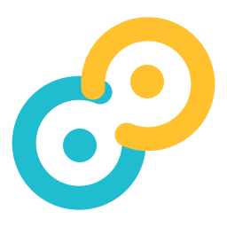
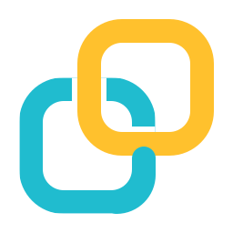
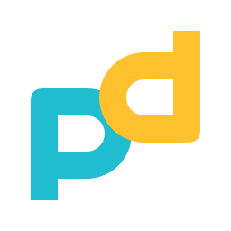
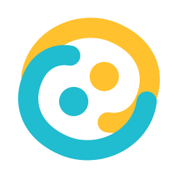

01 · 双环相扣
最接近现有图标。圆环与内容点形成一对，轮廓更紧凑。
实际尺寸16px 24px 32px 48px
深色任务栏
保留青色与黄色、粗线条和留白，让图形表达复制与收集。左侧是当前图标，下面四款是新方向。

最接近现有图标。圆环与内容点形成一对，轮廓更紧凑。

把圆环变成圆角纸页。更容易联想到复制、收集与知识卡片。

Paste 与 Panda 的两个 P 呼应。双色独立块面，品牌感更强。

整体更接近一个圆。两股颜色相向流动，适合做紧凑的桌面标志。
建议优先比较 01 与 02：01 延续感最强，02 与软件用途联系更直接。所有方案均为透明背景 SVG 矢量稿；小尺寸按实际像素展示。确定方向后再细化比例、留白及托盘专用稿。